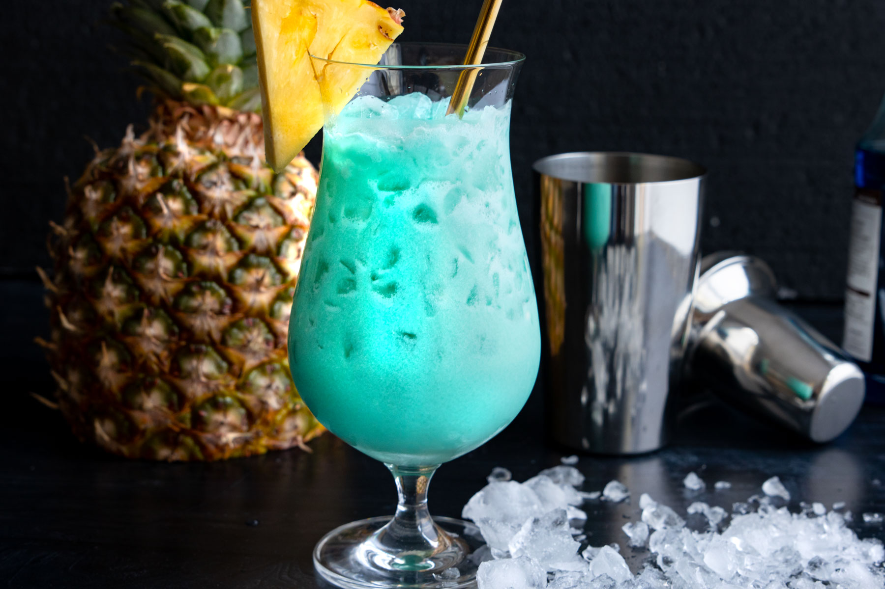

Swimming Pool

"Swimming Pool: Jump right in and enjoy the deep blue"
The origin of the Swimming Pool cocktail is a bit elusive, as it falls into the category of modern mixed drinks that have been crafted by creative bartenders seeking to capture the essence of leisure and relaxation in a glass. This cocktail's appeal lies not only in its delightful combination of flavors but also in its striking blue color, reminiscent of a pristine swimming pool.

Glass
The type of glass commonly used for serving a Swimming Pool cocktail is a Hurricane glass. The Hurricane glass is a distinctive, curvy glass that typically has a wide bowl and a tall stem. Its unique shape allows for a generous serving size while showcasing the vibrant colors of the cocktail. The wide opening of the glass also provides room for garnishes and enhances the overall visual appeal of the drink.
Ingredients and Instruction
ingredients
- 1 1/2 ounces (45 ml) white rum
- 1/2 ounce (15 ml) blue curaçao
- 1 ounce (30 ml) coconut cream or coconut milk
- 2 ounces (60 ml) pineapple juice
- 1/2 ounce (15 ml) simple syrup (optional, for added sweetness)
- Ice cubes
- Pineapple wedge, orange slice, and maraschino cherry for garnish
Instruction
- fill the glass with ice cubes
- add the white rum
- add blue Curaçao:
- pour coconut cream or coconut milk
- add pineapple juice
- optional: add simple syrup
- stir gently
- garnish with a pineapple wedge, an orange slice and a maraschino cherry
- serve